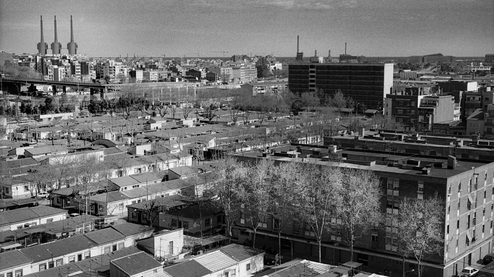
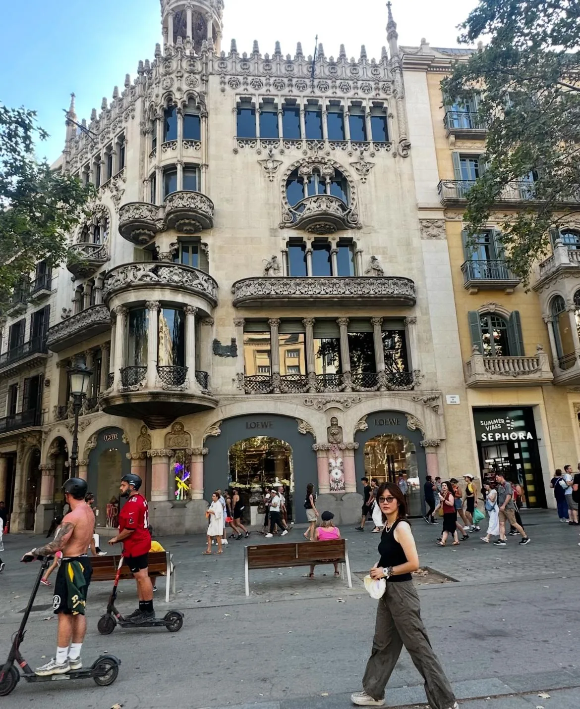
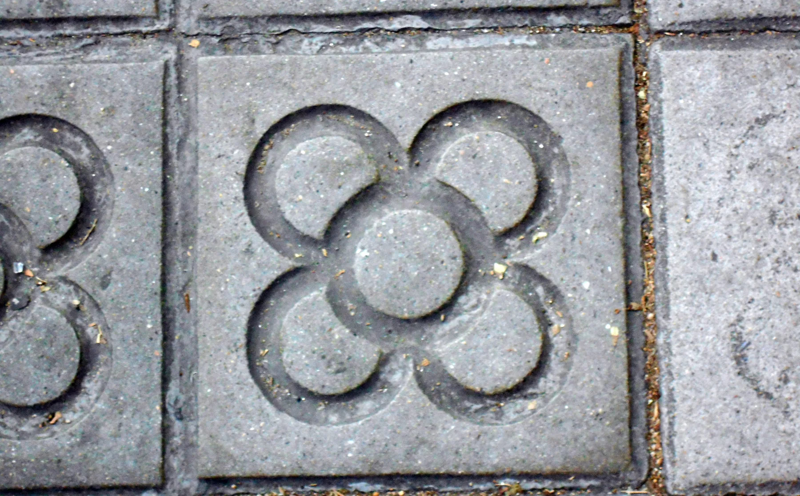
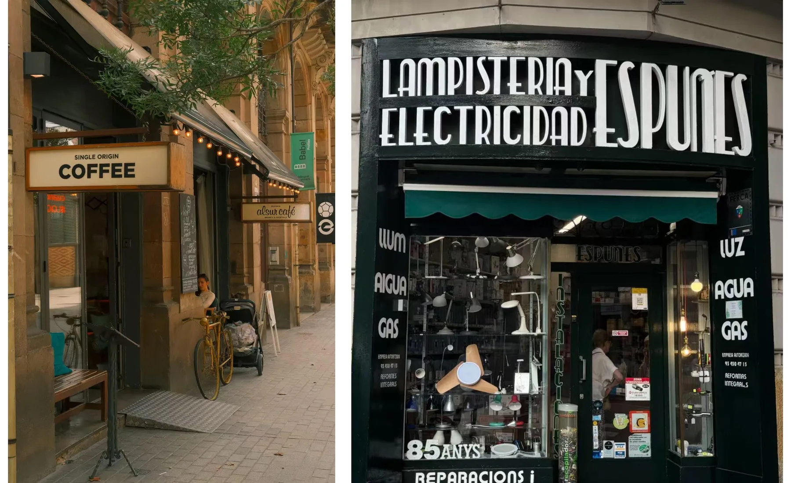
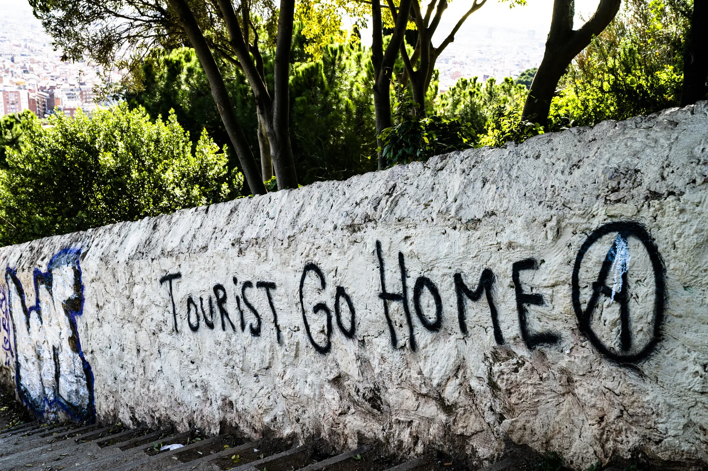
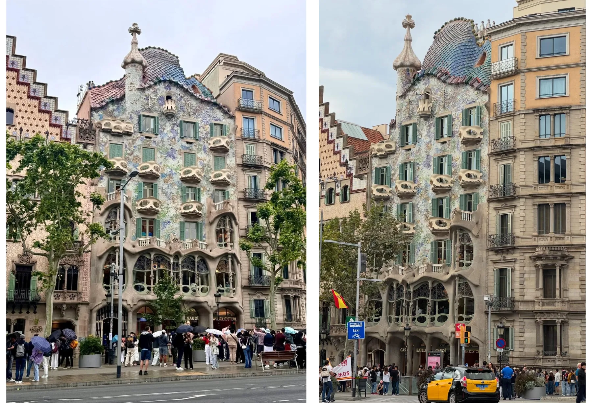
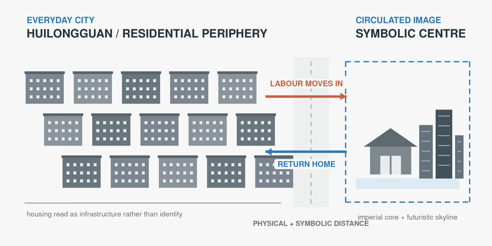
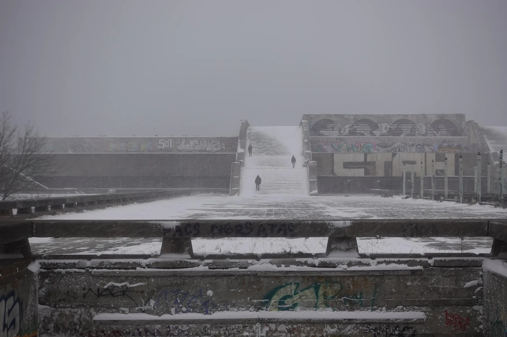

.jpg){kind=link}
吸纳
巴塞罗那 MUHBA Bon Pastor
一排保存下来的 cases barates，也就是 1929 年建的廉价房，讲述着工人阶级住房的历史。城市把一段边缘的历史纳入官方形象，从而扩展了这个形象；而承认，要等到这些房子不再像从前那样有人居住时才到来。

冯恺琦 设计与研究
论文，2026
透过三面城市之镜看巴塞罗那
刚到巴塞罗那时，我觉得这座城市对自己的形象格外在意。它的人行道、立面、纪念碑、店面、房屋照片和博物馆叙事，组成了一套视觉系统，让这座城市很容易被认出，也很容易被消费。这篇论文追问的是：这套系统对人在城市中的归属感做了什么。
01被品牌化的城市
我不把城市品牌看作一个标志或一场宣传活动，而是看作一种分布式的空间界面：一套视觉与感官线索，决定谁、什么能被看见。在巴塞罗那，1992 年奥运会给了它政治意愿，Eixample 扩展区的网格给了它完美的画布。作为留学生，我每天在城里行走，在店面、街道、租来的房间和排队的人群里读它。





02三面镜子
这种比较是有意不对称的。我不整体比较巴塞罗那、北京、上海和塔林，而是比较具体的视觉操作：不便的历史、必需的居住空间、被保护的建筑和过时的纪念物，各自遭遇了什么。
03四种机制
城市不只是隐藏不便的现实。它们也可能把现实保存为遗产，把它推到远处，保留建筑却替换用途，或者让一些地方悬而未决。
| 地点 | 操作 | 仍然可见的 | 退出视野的 | 效果 |
|---|---|---|---|---|
| 巴塞罗那 / Bon Pastor | 吸纳 | 作为公共遗产的工人阶级住房 | 仍在继续的抗争，和当下的住房不稳定 | 通过文化纳入获得承认 |
| 北京 / 回龙观 | 隔离 | 皇城核心与未来感的中心 | 通勤者的日常住房 | 依赖它，却不对等地呈现它 |
| 上海 / 张园 | 功能改写 | 历史肌理与建筑细节 | 原有的居住功能与居民 | 遗产的延续承载起新的高价值用途 |
| 塔林 / Linnahall | 悬置 | 纪念物、废墟、未了结的记忆 | 稳定的用途和最终的叙事 | 暧昧仍在；能否进入并不确定 |
吸纳
一排保存下来的 cases barates，也就是 1929 年建的廉价房，讲述着工人阶级住房的历史。城市把一段边缘的历史纳入官方形象，从而扩展了这个形象；而承认，要等到这些房子不再像从前那样有人居住时才到来。

隔离
日常的城市既没有被拆除，也没有被策展成遗产；它被放到离城市最广为流传的形象很远的地方，在物理上，也在象征上。工人们向内通勤、劳作，再返回外围。

功能改写
保护本身成了一种改变的技术。砖墙、弄堂名、门和装饰表面依然清晰可辨，普通集体居住的功能却大部分被改写了。
悬置
这座混凝土建筑群是为 1980 年莫斯科奥运会的帆船赛事而建，如今清晰可见，却悬而未决，还没有被完全用于城市品牌。

没有哪种机制是纯粹的。Bon Pastor 能支撑记忆，也把抗争变成了遗产；回龙观对居民和规划并非不可见；张园改善了许多人的住房，也让家庭生活离开了这片地方；Linnahall 的暧昧既能保留开放，也会造成荒废。
04对图像的权利
视觉上的统一从来不只是审美问题。它是一种软治理，决定谁被邀请来看，谁被允许留下，谁的日常生活能出现在城市的形象里。
真正开放的城市，不是在照片里看起来完美的城市，而是允许自己凌乱、未完成，并不断被住在那里的人改写的城市。
一座城市能否拥有鲜明的视觉识别，又不排斥那些不符合画面的人？
我用 ChatGPT 做语言润色和结构审阅，也让它协助查找可能的文献。每一条引用的来源，我都对照原始出版物或机构网页核实过；所有的解读、论点、图像和最终措辞，都由我审阅并确认。
Eixample 扩展区、店面、巴特罗之家和 Linnahall 的照片，以及两张图解，都是我自己的；张园的图解是根据论文中的图为本页重绘的。另有三张照片是他人拍摄的，来自 Wikimedia Commons，每张下方都注明了出处：Canaan 拍摄的“巴塞罗那之花”地砖（CC BY-SA 4.0），Billie Grace Ward 拍摄的“Tourist Go Home”（CC BY 2.0），以及 Carola Pagani 拍摄的 Bon Pastor 廉价房（CC BY-SA 3.0）。它们按论文中的方式裁切，两张 CC BY-SA 照片的裁切版本沿用相同的许可共享。